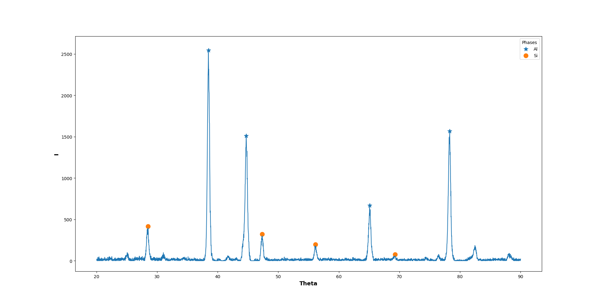

装一下，给自己点压力つ﹏⊂
“你们用了半个世纪的时间，让一截三毫米的头发移动了两厘米”程心回答
“是空间曲率驱动使它移动的“维德说
重新思考了一下整个程序要干什么，需要输入那些数据，需要对这些数据做什么操作，尝试去把这些操作函数化，并且尝试泛化一些参数（不过目前的范围还是限定在铝合金中一些常见相的标定，感觉目前去写pdf卡片的接口有点不现实）。目前的设想是把每个相打包成一个模块，需要要的话直接导入，这样感觉代码可能会更加可读(抑或将每个相向axes添加曲线的过程函数化)。好像整个project的架构还是没清楚つ﹏⊂
目前的代码如下：
1 | import numpy |
